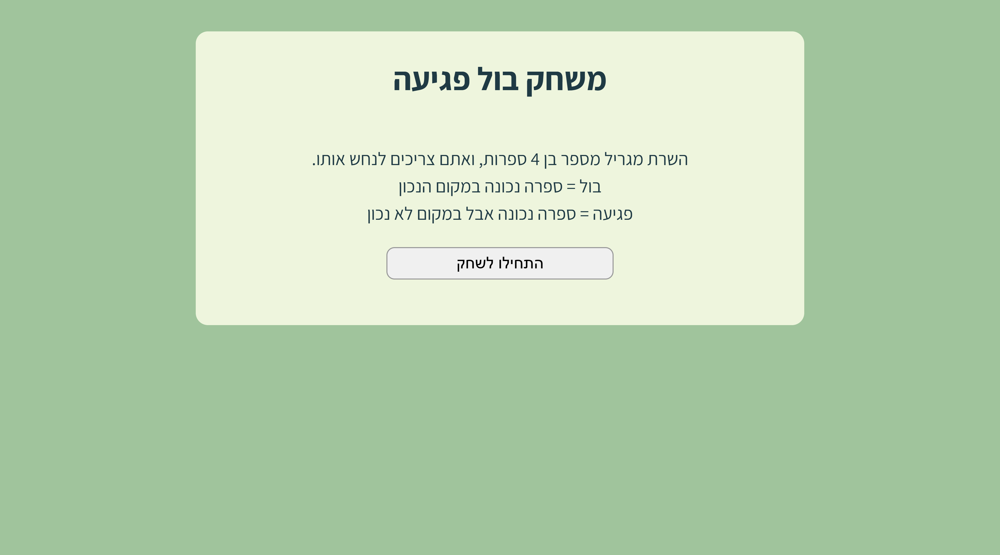
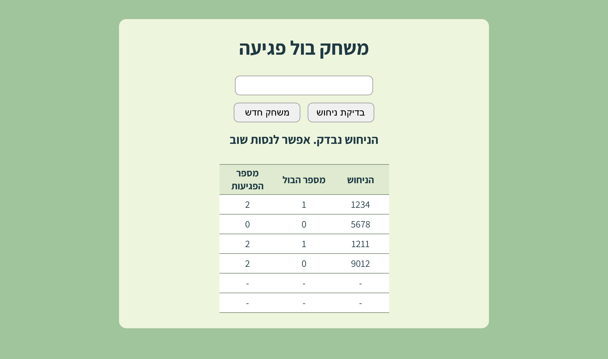

מה בונים?
דף משחק באתר שלכם, למשתמשים רשומים. השרת מגריל מספר בן 4 ספרות, ואתם מנחשים. אחרי כל ניחוש השרת עונה:
- בול: כמה ספרות נכונות, במקום הנכון.
- פגיעה: כמה ספרות נכונות, אבל במקום אחר.
כל הניחושים נשמרים בטבלה, עד שמנחשים 4 בול.


את כל זה כבר למדתם
- דף תוכן חדש, וקישור בתפריט: תחנה 4, שלבים 5 ו-3
- התפריט לפי מי שמחובר (
menuBar): תחנה 15 - דף שמסתיר את התוכן ממי שאסור לו (
denyMsg,disp): סעיף 4.13.4, "טיפ" - המגירה
Session: פרק 4.10 IsPostBack: פרק 4.15, שלב 4- בניית שורות של טבלה במחרוזת, והצגתה עם
<%= … %>: תחנה 12 Random, מחרוזת כמערך של תווים (guess[i]), מערכים ולולאות: "יסודות מדעי המחשב"
ומה חדש כאן:
- פקדי שרת: תגיות שמתחילות ב-
asp:. הקוד ב-C# מכיר כל אחת מהן לפי השם שלה (ID), ומשנה אותה ישירות. - כפתור שמפעיל פעולה ב-C#, בשרת, ולא פונקציה ב-JavaScript.
Split: מפרק מחרוזת לחלקים.
שלב 1 · הדף, התפריט, והשומר
- דף תוכן חדש, כמו בתחנה 4, שלב 5. באתר המלווה:
Bullseye.aspx, וב-Title: "בול פגיעה". - קישור בתפריט, רק למשתמשים רשומים ולמנהל. בקובץ
MasterPage.Master.cs, בענף של המנהל ובענף של המשתמש הרגיל:
menuBar += "<a href='Bullseye.aspx' class='mpMenuBarBtn'>בול פגיעה</a>";בניתם את התפריט הנפתח? אז אצלכם:
menuBar += "<li><a href='Bullseye.aspx'"
+ " class='mpMenuBarBtn'>בול פגיעה</a></li>";- השומר: אורח שמקליד את שם הדף בשורת הכתובת לא יראה את המשחק. זה בדיוק הדפוס של סעיף 4.13.4: הודעה, ו-
divשמוסתר. נכתוב אותו בשלב 3 (באזור התוכן) ובשלב 4 (ב-C#).
שלב 2 · העיצוב
ב-Bullseye.aspx, באזור head, בלוק style של הדף, בשלמותו:
<style>
.mainBox {
width: 600px;
margin: 30px auto;
padding: 25px;
background-color: #eef5dd;
border-radius: 12px;
box-sizing: border-box;
}
h1 {
text-align: center;
margin-top: 0;
margin-bottom: 25px;
}
.startPanel {
text-align: center;
padding: 20px 40px;
}
.startExplain {
font-size: 18px;
line-height: 1.5;
margin-bottom: 20px;
}
.startBtn {
width: 224px;
font-size: 16px;
padding: 6px 14px;
cursor: pointer;
border-radius: 8px;
border: 1px solid #999;
box-sizing: border-box;
}
.gamePanel {
text-align: center;
}
.topBar {
margin-bottom: 15px;
}
.guessBox {
width: 224px;
font-size: 16px;
text-align: center;
padding: 6px;
border-radius: 8px;
border: 1px solid #999;
box-sizing: border-box;
margin-bottom: 12px;
}
.btnRow {
margin-bottom: 12px;
}
.btnRow input[type=submit] {
width: 108px;
font-size: 16px;
padding: 6px 14px;
cursor: pointer;
border-radius: 8px;
border: 1px solid #999;
box-sizing: border-box;
}
.btnRow input[type=submit]:first-child {
margin-left: 8px;
}
.msg {
text-align: center;
font-size: 20px;
font-weight: bold;
min-height: 35px;
margin-bottom: 18px;
}
.gameTable {
width: 50%;
margin: 0 auto;
border-collapse: collapse;
table-layout: fixed;
background-color: white;
}
.gameTable th,
.gameTable td {
width: 33.33%;
text-align: center;
font-size: 16px;
border-top: 1px solid #7f8c7a;
border-bottom: 1px solid #7f8c7a;
border-right: 0;
border-left: 0;
}
.gameTable th {
background-color: #dfead0;
padding: 3px;
}
.gameTable td {
padding: 5px;
}
.winMsg {
color: green;
}
.errorMsg {
color: darkred;
}
</style>העיקר בו:
.mainBox: הקופסה הירוקה שבתוכה כל המשחק..startPanelו-.gamePanel: שני "מסכים": מסך הפתיחה, ומסך המשחק. בכל רגע רק אחד מהם מופיע (שלב 5)..gameTable: טבלת הניחושים..winMsgו-.errorMsg: צבע ירוק להודעת ניצחון, ואדום כהה לשגיאה.
התאמה לאתר שלכם: צבע הקופסה (#eef5dd) ושורת הכותרת של הטבלה (#dfead0): אפשר בצבעים של האתר שלכם.
שלב 3 · פקדי השרת
בקובץ Bullseye.aspx, באזור התוכן:
<%= denyMsg %>
<div style="display: <%= disp %>;">
<form runat="server">
<div class="mainBox">
<h1>משחק בול פגיעה</h1>
<asp:Panel ID="pnlStart" runat="server" CssClass="startPanel">
<div class="startExplain">
השרת מגריל מספר בן 4 ספרות, ואתם צריכים לנחש אותו.<br />
בול = ספרה נכונה במקום הנכון<br />
פגיעה = ספרה נכונה אבל במקום לא נכון
</div>
<asp:Button ID="btnStartGame" runat="server" Text="התחילו לשחק" CssClass="startBtn" OnClick="btnStartGame_Click" />
</asp:Panel>
<asp:Panel ID="pnlGame" runat="server" CssClass="gamePanel">
<div class="topBar">
<asp:TextBox ID="txtGuess" runat="server" MaxLength="4" CssClass="guessBox"></asp:TextBox>
<div class="btnRow">
<asp:Button ID="btnCheck" runat="server" Text="בדיקת ניחוש" OnClick="btnCheck_Click" />
<asp:Button ID="btnNewGame" runat="server" Text="משחק חדש" OnClick="btnNewGame_Click" />
</div>
</div>
<div class="msg">
<asp:Label ID="lblMsg" runat="server"></asp:Label>
</div>
<table class="gameTable">
<tr>
<th>הניחוש</th>
<th>מספר הבול</th>
<th>מספר הפגיעות</th>
</tr>
<%= tableRows %>
</table>
</asp:Panel>
</div>
</form>
</div>מה חדש כאן: פקדי שרת. עד עכשיו כתבנו תגיות HTML רגילות, והשרת "ראה" רק את מה שנשלח מהן ב-Request.Form. תגית שמתחילה ב-asp: ויש לה runat="server" היא פקד שרת: לפני שהדף נשלח לדפדפן, השרת הופך אותה ל-HTML רגיל, אבל בקוד ב-C# אפשר לפנות אליה ישירות, לפי ה-ID שלה.
| הפקד | הופך בדפדפן ל… | ובקוד ב-C# |
|---|---|---|
asp:Panel | div | pnlGame.Visible = false; מסתיר את כל מה שבתוכו |
asp:TextBox | input type="text" | txtGuess.Text הוא מה שהגולש הקליד |
asp:Button | input type="submit" | לחיצה מפעילה את הפעולה שב-OnClick |
asp:Label | span | lblMsg.Text = "…"; כותב לתוכו |
CssClass: בפקדי שרת, המחלקה נכתבת כך (ולאclass). בדפדפן היא תהיהclassרגיל.OnClick="btnCheck_Click": הכפתור שולח את הטופס, וכשהשרת מקבל אותו, הוא מפעיל את הפעולהbtnCheck_Click. לא JavaScript: הפעולה רצה בשרת.
התאמה לאתר שלכם: הכותרת וההסבר. את ה-ID-ים ואת שמות הפעולות ב-OnClick לא משנים: הקוד ב-C# מחפש אותם בדיוק כך.
שלב 4 · ההתחלה: Page_Load
בקובץ Bullseye.aspx.cs. קודם המשתנים של הדף:
// המחרוזת שתודפס בתוך הטבלה ב-ASPX
public string tableRows = "";
// אובייקט אקראי אחד קבוע למחלקה
private static Random rnd = new Random();
public string denyMsg = "";
public string disp = "block";על static: בלי המילה הזאת, כל בקשה לדף הייתה יוצרת Random חדש. שני Random שנוצרים כמעט באותו רגע עלולים להגריל אותם מספרים. עם static יש אובייקט אחד, משותף לכל הבקשות.
protected void Page_Load(object sender, EventArgs e)
{
if (Session["uName"].ToString() == "אורח")
{
denyMsg = "<div class='messageBox messageAlert'>";
denyMsg += "הדף שביקשתם פתוח למשתמשים רשומים בלבד.";
denyMsg += "<br />";
denyMsg += "<a href='Login.aspx'>התחברות</a> · <a href='Register.aspx'>הרשמה</a>";
denyMsg += "</div>";
disp = "none";
return;
}
// אם עדיין לא נשמר מספר סודי - מגרילים
if (Session["secretNumber"] == null)
Session["secretNumber"] = CreateRandomNumber();
// אם עדיין לא נשמרו מהלכי משחק - מתחילים ממחרוזת ריקה
if (Session["gameData"] == null)
Session["gameData"] = "";
// אם עדיין לא נשמר מצב המשחק - מתחילים ממסך הפתיחה
if (Session["gameStarted"] == null)
Session["gameStarted"] = false;
// בונים את שורות הטבלה לפי הנתונים ששמורים ב-Session
tableRows = BuildTableRows();
// מציגים את הפאנל המתאים
UpdatePanels();
// הודעת פתיחה רק בטעינה ראשונה של הדף
if (!IsPostBack)
{
if ((bool)Session["gameStarted"] == true)
lblMsg.Text = "הכניסו ניחוש בן 4 ספרות";
else
lblMsg.Text = "";
lblMsg.CssClass = "";
}
}- השומר: כמו בסעיף 4.13.4. אורח מקבל הודעה, והמשחק מוסתר.
== null: מגירה שעוד לא שמו בה כלום מחזירהnull. בסקר נתנו ערכי התחלה ב-Session_Start; כאן הדף עושה את זה בעצמו, כי את המספר הסודי מגרילה פעולה של הדף (CreateRandomNumber), ולאGlobal.asax. כך כל שלושת ערכי ההתחלה של המשחק נמצאים במקום אחד.- שלוש מגירות:
secretNumber, המספר להגיע אליו ·gameData, כל הניחושים עד עכשיו ·gameStarted, האם הגולש כבר לחץ "התחילו לשחק".
שלב 5 · שני מסכים, ושלוש פעולות קטנות
בקובץ Bullseye.aspx.cs, מתחת ל-Page_Load:
protected void btnStartGame_Click(object sender, EventArgs e)
{
Session["gameStarted"] = true;
UpdatePanels();
lblMsg.Text = "הכניסו ניחוש בן 4 ספרות";
lblMsg.CssClass = "";
}protected void btnNewGame_Click(object sender, EventArgs e)
{
// מאפסים הכול
Session["secretNumber"] = CreateRandomNumber();
Session["gameData"] = "";
Session["gameStarted"] = false;
tableRows = BuildTableRows();
txtGuess.Text = "";
lblMsg.Text = "";
lblMsg.CssClass = "";
UpdatePanels();
}// פעולה שמחליטה איזה פאנל יופיע
private void UpdatePanels()
{
bool started = (bool)Session["gameStarted"];
pnlStart.Visible = !started;
pnlGame.Visible = started;
}
// פעולה שמגרילה מספר בן 4 ספרות
private string CreateRandomNumber()
{
string num = "";
for (int i = 0; i < 4; i++)
num += rnd.Next(0, 10);
return num;
}Visible: פאנל עםVisible = falseלא נשלח לדפדפן בכלל. כך בכל רגע מופיע רק מסך אחד.rnd.Next(0, 10): ספרה מ-0 עד 9. ארבע פעמים, ומקבלים מחרוזת כמו"0731". (מחרוזת ולא מספר: כך גם0בהתחלה נשמר, וקל להשוות ספרה מול ספרה.)
בדיקה: הריצו כמשתמש רשום. מסך הפתיחה. לחיצה על "התחילו לשחק": מסך המשחק, עם טבלה של שורות ריקות. "משחק חדש": חזרה למסך הפתיחה. (הכפתור "בדיקת ניחוש" עוד לא עובד.)
שלב 6 · בדיקת ניחוש
בקובץ Bullseye.aspx.cs:
protected void btnCheck_Click(object sender, EventArgs e)
{
string guess = txtGuess.Text.Trim();
string secret = Session["secretNumber"].ToString();
// בדיקה: חייבים בדיוק 4 תווים
if (guess.Length != 4)
{
lblMsg.Text = "יש להכניס בדיוק 4 ספרות";
lblMsg.CssClass = "errorMsg";
return;
}
// בדיקה: כל התווים חייבים להיות ספרות
for (int i = 0; i < 4; i++)
{
if (guess[i] < '0' || guess[i] > '9')
{
lblMsg.Text = "מותר להכניס ספרות בלבד";
lblMsg.CssClass = "errorMsg";
return;
}
}
int bull = 0;
int hit = 0;
bool[] usedSecret = new bool[4];
bool[] usedGuess = new bool[4];
// שלב א' - בודקים בול
for (int i = 0; i < 4; i++)
{
if (guess[i] == secret[i])
{
bull++;
usedSecret[i] = true;
usedGuess[i] = true;
}
}
// שלב ב' - בודקים פגיעה
for (int i = 0; i < 4; i++)
{
if (usedGuess[i] == false)
{
for (int j = 0; j < 4; j++)
{
if (usedSecret[j] == false && guess[i] == secret[j])
{
hit++;
usedSecret[j] = true;
usedGuess[i] = true;
break;
}
}
}
}
// מוסיפים את המהלך החדש למחרוזת הנתונים
// פורמט של כל מהלך:
// ניחוש|בול|פגיעה~
string move = guess + "|" + bull + "|" + hit + "~";
Session["gameData"] = Session["gameData"].ToString() + move;
// בונים מחדש את שורות הטבלה
tableRows = BuildTableRows();
// הודעה למשתמש
if (bull == 4)
{
lblMsg.Text = "כל הכבוד! ניחשתם נכון את המספר";
lblMsg.CssClass = "winMsg";
}
else
{
lblMsg.Text = "הניחוש נבדק. אפשר לנסות שוב";
lblMsg.CssClass = "";
}
txtGuess.Text = "";
}נעבור על זה:
- שתי בדיקות קלט: בדיוק 4 תווים, וכולם ספרות.
'0'ו-'9'בגרש בודד: אלה תווים, ולא מספרים, ולכן משווים תו מול תו. - שלב א, בול: ספרה מול ספרה, באותו מקום.
- שלב ב, פגיעה: לכל ספרה בניחוש שעוד לא נספרה, מחפשים אותה במקום אחר במספר הסודי.
- למה שני מערכים של
bool? כדי שאף ספרה לא תיספר פעמיים. למשל, המספר1123והניחוש1211: ה-1 הראשון הוא בול, ה-2 הוא פגיעה, ובמספר נשאר עוד 1 אחד בלבד. לכן רק אחד משני ה-1 שבסוף הניחוש הוא פגיעה: 1 בול ו-2 פגיעות. בליusedSecret, שני ה-1 היו "מוצאים" את ה-1 הראשון של המספר, ויוצאות 3 פגיעות. break: ספרה בניחוש שמצאה התאמה, מפסיקה לחפש.
התאמה לאתר שלכם: אין: המשחק אותו משחק. רק הטקסטים של ההודעות, אם תרצו.
שלב 7 · טבלת הניחושים
כל הניחושים נשמרים במחרוזת אחת, ב-Session["gameData"]. כל מהלך: הניחוש, הבול והפגיעות, מופרדים ב-|, ובסופו ~. למשל, אחרי שני ניחושים:
1234|1|2~5678|0|0~ואת המחרוזת הזאת מפרקים חזרה לשורות:
// פעולה שבונה את שורות הטבלה
private string BuildTableRows()
{
string rows = "";
string data = Session["gameData"].ToString();
// אם עדיין אין ניחושים
if (data == "")
{
for (int i = 0; i < 6; i++)
{
rows += "<tr>";
rows += "<td>-</td>";
rows += "<td>-</td>";
rows += "<td>-</td>";
rows += "</tr>";
}
return rows;
}
string[] moves = data.Split('~');
int count = 0;
// קודם בונים שורות לפי הניחושים שבאמת היו
for (int i = 0; i < moves.Length; i++)
{
if (moves[i] != "")
{
string[] parts = moves[i].Split('|');
rows += "<tr>";
rows += "<td>" + parts[0] + "</td>";
rows += "<td>" + parts[1] + "</td>";
rows += "<td>" + parts[2] + "</td>";
rows += "</tr>";
count++;
}
}
// אם יש פחות מ-6 ניחושים, משלימים שורות עם "-"
while (count < 6)
{
rows += "<tr>";
rows += "<td>-</td>";
rows += "<td>-</td>";
rows += "<td>-</td>";
rows += "</tr>";
count++;
}
return rows;
}data.Split('~'): מפרק את המחרוזת למערך של מהלכים, בכל מקום שיש~. כי המחרוזת נגמרת ב-~, החלק האחרון ריק, ולכןif (moves[i] != "").moves[i].Split('|'): מפרק מהלך אחד לשלושה חלקים: הניחוש, הבול, הפגיעות.- שש שורות לפחות: כדי שהטבלה לא "תקפוץ" בגובה בתחילת המשחק. אחרי השישי, כל ניחוש מוסיף שורה.
בדיקה: שחקו משחק שלם.
שלב 8 · בודקים
- כאורח: אין "בול פגיעה" בתפריט. אם מקלידים את שם הדף: ההודעה "הדף שביקשתם פתוח למשתמשים רשומים בלבד", בלי המשחק.
- כמשתמש רשום: מסך הפתיחה, ו"התחילו לשחק" עובר למסך המשחק.
- ניחוש של 3 ספרות: "יש להכניס בדיוק 4 ספרות", באדום.
- ניחוש עם אות: "מותר להכניס ספרות בלבד".
- ניחוש תקין: שורה חדשה בטבלה, והתיבה מתרוקנת.
- ספרה שחוזרת: אם במספר הסודי יש ספרה פעמיים, ובניחוש שלוש פעמים, הספירה עדיין נכונה. (כדי לבדוק, אפשר לכתוב זמנית את המספר הסודי בהודעה, ולמחוק אחר כך.)
- 4 בול: "כל הכבוד! ניחשתם נכון את המספר", בירוק.
- יציאה מהדף וחזרה: המשחק ממשיך מאותו מקום, עם אותם ניחושים.
- "משחק חדש": חזרה למסך הפתיחה, וטבלה ריקה. משחק חדש, מספר חדש.
כשמשהו לא עובד
| מה רואים | הסיבה | התיקון |
|---|---|---|
שגיאה: השם txtGuess (או lblMsg, pnlGame) לא קיים | ה-ID בפקד שונה מהשם בקוד, או שחסר runat="server" | השמות רגישים לאותיות גדולות וקטנות |
| לחיצה על כפתור לא עושה כלום | השם ב-OnClick שונה משם הפעולה ב-C# | OnClick="btnCheck_Click" ו-protected void btnCheck_Click(...) |
שגיאה על Session["gameStarted"] | UpdatePanels רץ לפני שנתנו לו ערך | ב-Page_Load, שלוש בדיקות ה-null לפני UpdatePanels() |
| שני המסכים מופיעים יחד, או אף אחד | UpdatePanels לא נקרא, או ש-Visible הפוך | שלב 5 |
| כל ניחוש מוחק את הקודם | = במקום הוספה ל-gameData | Session["gameData"].ToString() + move |
| הספירה של פגיעה גבוהה מדי כשיש ספרות שחוזרות | המערכים usedSecret, usedGuess חסרים, או ש-break חסר | שלב 6 |
| אורח רואה את המשחק | השומר חסר, או ש-div עם disp לא עוטף את הטופס | שלב 3 ושלב 4 |
הקבצים להשוואה
להשוואה בלבד. הקבצים של האתר המלווה, "בעלי החיים שלי", אחרי הפיצ'ר.
| הקובץ | מה יש בו |
|---|---|
bullseye_end_Bullseye.aspx | העיצוב ופקדי השרת (שלבים 2 ו-3) |
bullseye_end_Bullseye.aspx.cs | כל הקוד בשרת (שלבים 4 עד 7) |
bullseye_end_MasterPage.Master.cs | הכפתור בתפריט (שלב 1) |
שימו לב: בקובץ של דף האב יש גם את מה ששני הפיצ'רים האחרים מוסיפים (התפריט הנפתח, "סקר"). אצלכם הם יופיעו רק אם בניתם אותם.